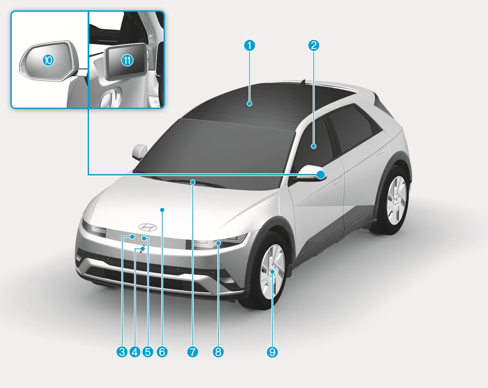

전면

1C_OutsideVehicleFrontOverview
- 비전 루프 비전루프 사용하기
- 유리창 유리창 열림/닫힘 장치
- 전방 레이더 인식 센서 및 제한 사항
- 충전 표시등 충전 상태 확인하기
- 광각-전방 카메라 인식 센서 및 제한 사항
- 후드 후드 열기
- 앞유리 와이퍼 앞유리 와이퍼 작동하기
- 램프(앞) 실외 조명 스위치, 전조등, 방향지시등, 차폭등, 주간 주행등
- 휠/타이어 타이어 및 휠 점검하기
- 사이드 미러 사이드 미러
- 디지털 사이드 미러(DSM) 디지털 사이드 미러 (DSM)